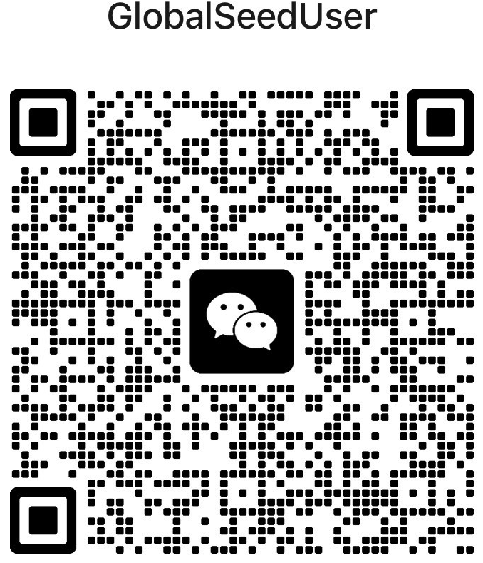
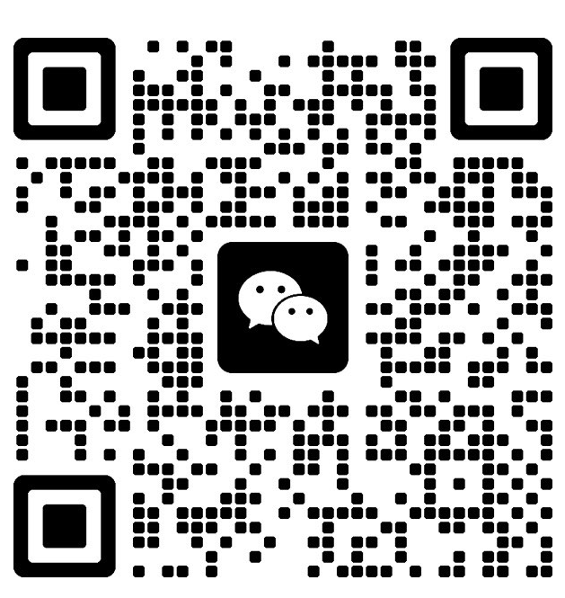

硬件是现实世界的延伸，让大脑看见现实正在发生什么。
实时信号流 0 条
三通道 眼 / 手 / 大脑
眼镜 / 摄像头采集画面声音，CV 识别成结构化信号。
清洗、比对、核验，生成带来源和置信度的建议。
人确认后，才进后台执行——机器狗、上线、发报价。
信号总线 BUS
一条现实信号从采集到执行的完整链路。每次产生信号，都会走 眼 → 大脑 → 手，并在"手"这一步生成一个待批事项等人确认。
链路演练 点击逐步产生
待批事项 HUMAN DECISION
这是 human in the loop 的核心：AI 生成的所有动作建议都在这里等人。只有你点"批准执行"，动作才真正发生；驳回则记录原因。状态保存在本机浏览器，刷新不丢。
待你判断 0 件
决策留痕 AUDIT TRAIL
每一次批准/驳回都留下时间、操作人、理由——谁做的判断、为什么，可追溯。这是"人负责"的证据链。
审批日志 0 条
眼睛 · 看现实 PERCEIVE
把现实里的画面和声音，变成大脑能读的结构化信号。状态：✅ 已上线 / 🔧 代码骨架在你本机 Xcode 编译 / 📋 规划中。
QC 戴上验来料，识别 SKU 当场留证。
打开 ↗AVFoundation 采集音频，边录边转写、打时间戳。
ios/Vision 做物体/SKU/文字检测，输出结构化标签。
ios/人脸检测+比对，用于到店核验；结果必须人确认。
ios/音视频同步采集、分片、上传，喂给清洗管线。
ios/浏览器本地 OCR 读标签 + PO 比对 + 指纹报告。
打开 ↗手 · 动现实 ACT
把大脑的决定变成现实世界的动作。所有动作经"待批事项"里的人确认后才执行。
蓝牙/Multipeer 连接机器狗，节拍驱动动作；指令需人授权。
ios/询盘→验厂→质检→出运→签收全流程，6 个工作台。
打开 ↗客户给子账号，我们进后台直接改上线——不是给一份文件。
看服务 ↗说一段话出中英双语站，当天上线。
打开 ↗海外询盘自动解析、匹配产品、生成草稿，人确认后发出。
console/大脑 · 做判断 DECIDE
把多源信号清洗、核验、理解，给出可执行建议——最终判断权在人。
音视频去抖/降噪/去重/对齐，输出干净数据集。Python 管线，7 测试通过。
pipeline/AI Native 服务页，讲清"托管→引导→放大"。
打开 ↗B2B 公开信息核验（非个人画像/追踪），每条标来源，人工复核。
规划中竞品与市场数据，给判断提供事实底座。
打开 ↗真实客户案例，验证"当天上线"的交付能力。
打开 ↗已有工作台 WORKSPACES
一个没落下——7 个已上线系统，按眼/手/脑归位，全部可点开。及官方服务入口。
大脑 / 判
官方服务群 · 进来找人

Fideight-GlobalSeedUser官方服务群 · 11.26 前有效
Carol Huang美国 · 库比蒂诺